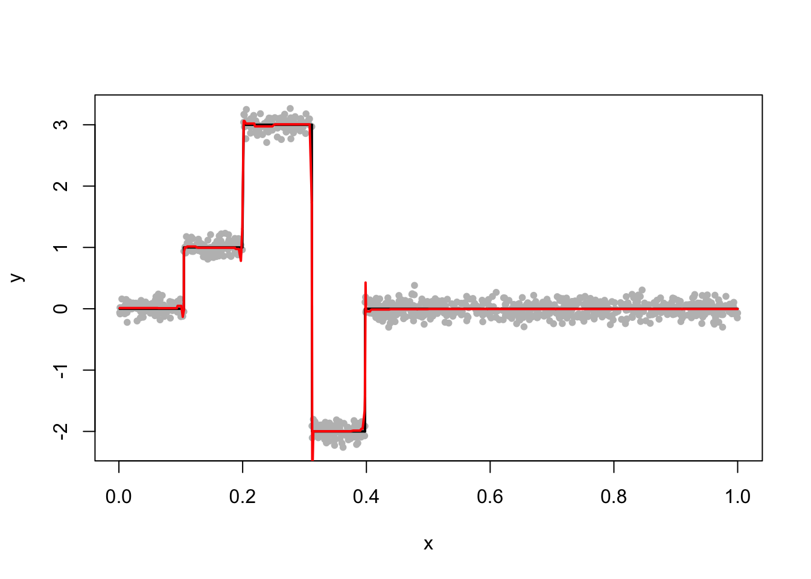
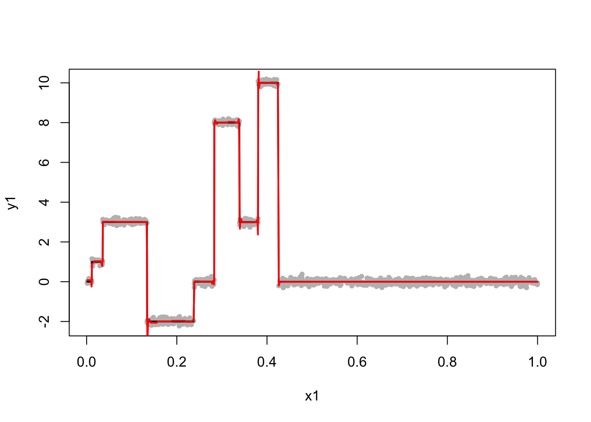
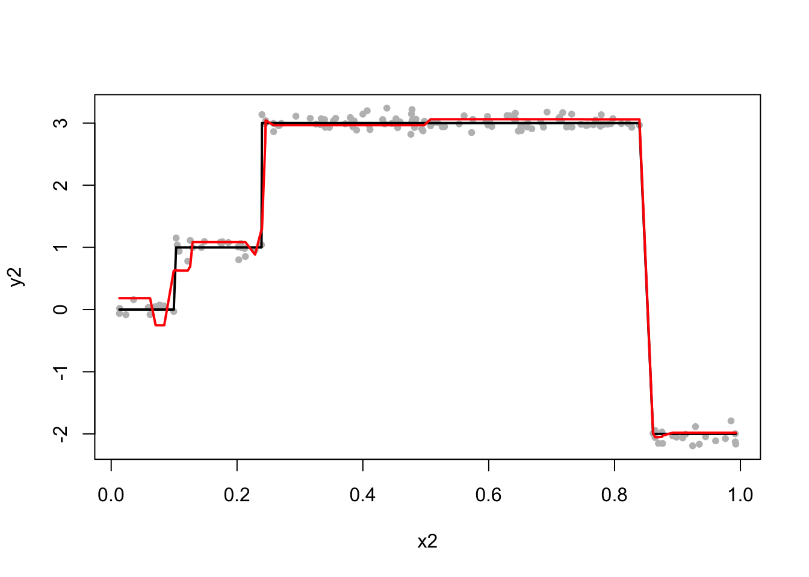

Last updated: 2019-01-28
workflowr checks: (Click a bullet for more information) ✔ R Markdown file: up-to-date
Great! Since the R Markdown file has been committed to the Git repository, you know the exact version of the code that produced these results.
✔ Environment: empty
Great job! The global environment was empty. Objects defined in the global environment can affect the analysis in your R Markdown file in unknown ways. For reproduciblity it’s best to always run the code in an empty environment.
✔ Seed:
set.seed(20190114)
The command set.seed(20190114) was run prior to running the code in the R Markdown file. Setting a seed ensures that any results that rely on randomness, e.g. subsampling or permutations, are reproducible.
✔ Session information: recorded
Great job! Recording the operating system, R version, and package versions is critical for reproducibility.
✔ Repository version: 21e6a42
wflow_publish or wflow_git_commit). workflowr only checks the R Markdown file, but you know if there are other scripts or data files that it depends on. Below is the status of the Git repository when the results were generated:
Ignored files:
Ignored: .DS_Store
Ignored: .Rhistory
Ignored: .Rproj.user/
Ignored: analysis/.DS_Store
Unstaged changes:
Modified: analysis/UDWT.Rmd
Deleted: analysis/UDWT2.Rmd
Modified: analysis/wavelet-susie-20190121.Rmd
| File | Version | Author | Date | Message |
|---|---|---|---|---|
| Rmd | 21e6a42 | kaiqian | 2019-01-28 | add non-equispaced wavelet-susie analysis |
In this analysis, we use DWT (i.e. orthogonal wavelet basis) in the SuSiE. Our goal is to apply wavelet-based method on non-equispaced data with sample size not necessarily a power of 2. We try a new interpolation approach proposed by Asad et al. in 2018 (paper link).
A non-parametric regression problem in the wavelet context is
\[ \hat{b} = \underset{b}{\mathrm{argmin}} \frac{1}{2}|| y- b||_2^2 + \lambda||Wb||_1, \] where \(W\) is the discrete wavelet transform (UWD) matrix.
Let \(\beta=Wb\). Then \(b = W^T\beta\) since \(W\) is orthogonal. The above problem becomes
\[\hat{\beta} = \underset{\beta}{\mathrm{argmin}} \frac{1}{2}||y- W^T\beta||_2^2 + \lambda||\beta||_1.\]
Given that \(y\) has \(n\) data points, \(W\) is an \(n\) by \(n\) matrix. The DWT, however, requires \(n\) to be a power of 2. We here try a novel interpolation method to solve this restriction.
Asad et al. proposed an n by K interpolation matrix \(R\):
\[ R_{ij}:= \begin{cases} 1 & j=1, x_i \leq 1/K \\ (j+1)-Kx_i & j = \lfloor K x_i \rfloor, x_i \in (1/K,1] \\ Kx_i - (j-1) & j = \lceil Kx_i \rceil, x_i \in (1/K,1] \\ 0 & \text{otherwise}, \end{cases} \] where \(K = 2^{\lceil log_2 n \rceil}\).
Then we can instead solve the following optimization problem \[ \hat{\beta} = \underset{\beta}{\mathrm{argmin}} \frac{1}{2}||y- RW^T\beta||_2^2 + \lambda||\beta||_1, \] where data points of \(x_i\) is non-equispaced and \(n\) is not necessarily a power of 2.
#' @param x is an n-vector of data
#' @return R an n by K interpolation matrix
create_interpolation_matrix = function(x){
n = length(x)
K = 2^(ceiling(log2(n)))
R = matrix(0, n, K)
for (i in 1:n){
for (j in 1:K){
if (j == 1 & x[i] <= 1/K){
R[i,j] = 1
} else if (j == floor(K*x[i]) & x[i] > 1/K & x[i] <=1){
R[i,j] = (j+1) - K*x[i]
} else if (j == ceiling(K*x[i]) & x[i] > 1/K & x[i] <=1){
R[i,j] = K*x[i] - (j-1)
} else R[i,j] = 0
}
}
return(R)
}Here is a minimal example of interpolation matrix R when n=7 and given non-equispaced data x.
n = 7
K = 2^(ceiling(log2(n)))
set.seed(1)
x = sort(runif(n, 0,1))
R = create_interpolation_matrix(x)
R [,1] [,2] [,3] [,4] [,5] [,6] [,7]
[1,] 0.3865446 0.6134554 0.0000000 0.0000000 0.0000000 0 0.0000000
[2,] 0.0000000 0.8759307 0.1240693 0.0000000 0.0000000 0 0.0000000
[3,] 0.0000000 0.0230088 0.9769912 0.0000000 0.0000000 0 0.0000000
[4,] 0.0000000 0.0000000 0.0000000 0.4171731 0.5828269 0 0.0000000
[5,] 0.0000000 0.0000000 0.0000000 0.0000000 0.0000000 0 0.8128825
[6,] 0.0000000 0.0000000 0.0000000 0.0000000 0.0000000 0 0.7343377
[7,] 0.0000000 0.0000000 0.0000000 0.0000000 0.0000000 0 0.4425979
[,8]
[1,] 0.0000000
[2,] 0.0000000
[3,] 0.0000000
[4,] 0.0000000
[5,] 0.1871175
[6,] 0.2656623
[7,] 0.5574021We use the example from SuSiE Trend Filtering vignette. We simulate n=1000 data points with x randomly drawn from a uniform distribution (0,1) i.e. x is not equally-spaced, and y has a piecewise-constant trend. Also notice that n=1000 is not a power of two. The following graph shows the susie fit.
n = 1000
K = 2^(ceiling(log2(n)))
set.seed(1)
x = sort(runif(n, 0,1))
beta = c(rep(0,100),rep(1,100),rep(3,100),rep(-2,100),rep(0,600))
set.seed(1)
y = beta + rnorm(n, sd=0.1)W <- t(GenW(n=K, filter.number=1, family="DaubExPhase"))
R = create_interpolation_matrix(x)
# tcrossprod(R,W) computes R %*% t(W)
RW_t = tcrossprod(R, W)s = susie(RW_t, y, L = 30, estimate_prior_variance = TRUE)plot(x, y, pch=20, col="grey")
lines(x, beta, col="black", lwd=2)
lines(x, predict(s), col='red', lwd=2)
Here is another example with more jumps.
n1 = 1000
K1 = 2^(ceiling(log2(n1)))
set.seed(1)
x1 = sort(runif(n1, 0,1))
beta1 = c(rep(0,10),rep(1,20),rep(3,100),rep(-2,100),rep(0,50),rep(8,50),rep(3,50), rep(10,50), rep(0,(n-430)))
set.seed(1)
y1 = beta1 + rnorm(n1, sd=0.1)W1 <- t(GenW(n=K1, filter.number=1, family="DaubExPhase"))
R1 = create_interpolation_matrix(x1)
# tcrossprod(R,W) computes R %*% t(W)
RW_t1 = tcrossprod(R1, W1)s1 = susie(RW_t1, y1, L = 50, estimate_prior_variance = TRUE)plot(x1, y1, pch=20, col="grey")
lines(x1, beta1, col="black", lwd=2)
lines(x1, predict(s1), col='red', lwd=2)
I observe many bad fits when n is small and y has more than 2 jumps. The following is one of those examples. Here we simulate n=150 data points with non-equispaced x. When fitting SuSiE, I have increased L=80 but I still get an unsatisfactory fit.
n2 = 150
K2 = 2^(ceiling(log2(n2)))
set.seed(1)
x2 = sort(runif(n2, 0,1))
beta2 = c(rep(0,10),rep(1,20),rep(3,100),rep(-2,20))
set.seed(1)
y2 = beta2 + rnorm(n2, sd=0.1)W2 <- t(GenW(n=K2, filter.number=1, family="DaubExPhase"))
R2 = create_interpolation_matrix(x2)
# tcrossprod(R,W) computes R %*% t(W)
RW_t2 = tcrossprod(R2, W2)s2 = susie(RW_t2, y2, L = 80, estimate_prior_variance = TRUE)plot(x2, y2, pch=20, col="grey")
lines(x2, beta2, col="black", lwd=2)
lines(x2, predict(s2), col='red', lwd=2)
sessionInfo()R version 3.4.3 (2017-11-30)
Platform: x86_64-apple-darwin15.6.0 (64-bit)
Running under: macOS Sierra 10.12.6
Matrix products: default
BLAS: /Library/Frameworks/R.framework/Versions/3.4/Resources/lib/libRblas.0.dylib
LAPACK: /Library/Frameworks/R.framework/Versions/3.4/Resources/lib/libRlapack.dylib
locale:
[1] en_US.UTF-8/en_US.UTF-8/en_US.UTF-8/C/en_US.UTF-8/en_US.UTF-8
attached base packages:
[1] stats graphics grDevices utils datasets methods base
other attached packages:
[1] smashr_1.2-0 glmnet_2.0-16 foreach_1.4.4
[4] Matrix_1.2-15 susieR_0.6.4.0427 binhf_1.0-3
[7] adlift_1.4-1 EbayesThresh_1.4-12 wavethresh_4.6.8
[10] MASS_7.3-51.1
loaded via a namespace (and not attached):
[1] Rcpp_1.0.0 compiler_3.4.3 git2r_0.24.0
[4] workflowr_1.1.1 bitops_1.0-6 R.methodsS3_1.7.1
[7] R.utils_2.7.0 iterators_1.0.10 tools_3.4.3
[10] digest_0.6.18 evaluate_0.12 lattice_0.20-38
[13] yaml_2.2.0 parallel_3.4.3 xfun_0.4
[16] stringr_1.3.1 knitr_1.21 caTools_1.17.1.1
[19] rprojroot_1.3-2 grid_3.4.3 data.table_1.11.8
[22] rmarkdown_1.11 ashr_2.2-7 magrittr_1.5
[25] whisker_0.3-2 matrixStats_0.54.0 backports_1.1.3
[28] codetools_0.2-16 htmltools_0.3.6 stringi_1.2.4
[31] doParallel_1.0.14 pscl_1.5.2 truncnorm_1.0-8
[34] SQUAREM_2017.10-1 R.oo_1.22.0 This reproducible R Markdown analysis was created with workflowr 1.1.1